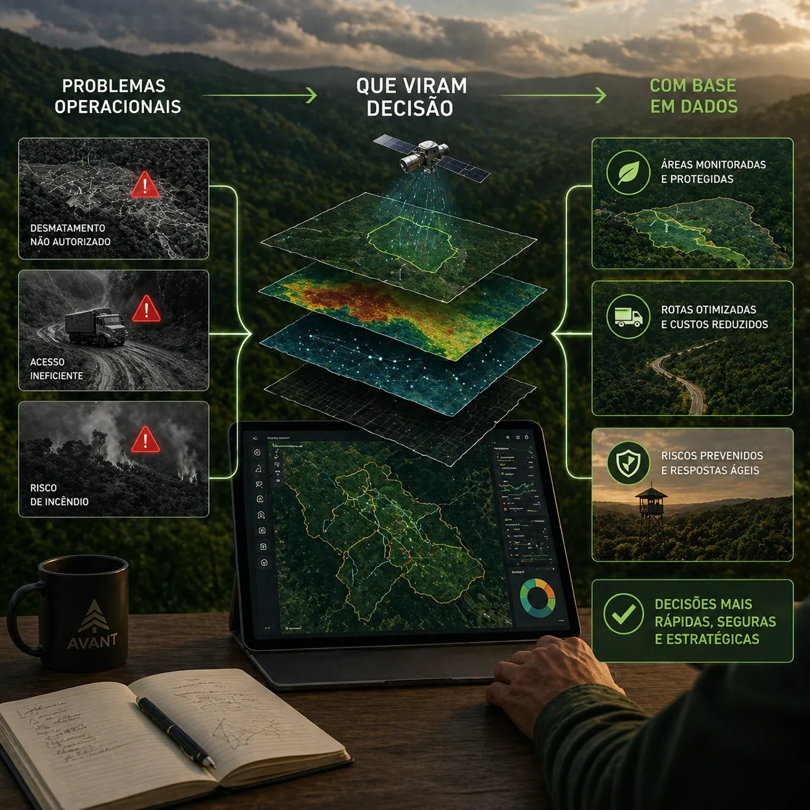

Atuação nacional
Apoiamos produtores, empresas e projetos com soluções técnicas sob medida para gestão florestal e territorial.
A Avant conecta tecnologia, precisão e visão territorial para transformar o setor agroflorestal. Atuamos com inteligência artificial, drones, sensoriamento remoto, cartografia técnica e automação geoespacial para apoiar operações florestais, ambientais e fundiárias em todo o Brasil.
Como no site atual da Avant, mantivemos a mensagem central da empresa: unir inovação e sustentabilidade. A diferença aqui é que a apresentação foi aprofundada para mostrar capacidade técnica, escala operacional e aplicação prática da inteligência artificial voltada para floresta.
Apoiamos produtores, empresas e projetos com soluções técnicas sob medida para gestão florestal e territorial.
Entregar soluções técnicas de excelência com inovação, responsabilidade socioambiental e foco em resultado.
Mais do que consultoria, a Avant atua como parceira estratégica para quem pensa o futuro do campo.
O site atual já apresenta uma base forte de serviços. Nesta nova versão, ampliamos a profundidade para deixar claro o valor técnico de cada frente.
Classificação de imagens, análise multitemporal e modelos para leitura técnica de grandes áreas.
Detecção automática com imagens de drone e auditoria de plantio com apoio de visão computacional.
Modelagem analítica para antecipar comportamento de áreas, falhas e padrões produtivos.
Satélites, drones, índices espectrais e mapas temáticos para visão contínua da operação.
Base cartográfica confiável para talhões, estradas, APPs, limites e mapas operacionais.
Microplanejamento, análise de relevo, apoio ao plantio, colheita e estudos ambientais.
Apoio documental, organização fundiária e leitura territorial para ativos rurais e florestais.
Painéis executivos e plataformas internas para consulta geográfica, indicadores e mapas dinâmicos.

Cada projeto nasce da necessidade do cliente e evolui para uma entrega clara: base confiável, processamento técnico, análise aplicada e material útil para a tomada de decisão.
Inspirado na organização do site atual, este bloco detalha melhor a profundidade técnica das entregas da Avant em relevo, uso do solo, impactos e conversão de áreas.
Identificação de inclinações, formas de relevo, classes operacionais e restrições aplicadas ao plantio, silvicultura, colheita e acessos.
Mapeamento detalhado de áreas produtivas, vegetação nativa, áreas consolidadas e zonas de transição com suporte a regularização fundiária e ambiental.
Avaliação de vendavais, estiagens, incêndios, deslizamentos e vulnerabilidades ambientais com base geoespacial e análise multitemporal.
Análises para apoio à viabilidade técnico-ambiental, considerando legislação, passivos e compatibilidade com normas e critérios operacionais.
Assim como no site atual, mantivemos um espaço para apresentar plataformas e ambientes digitais, mas agora com uma leitura mais corporativa e mais preparada para venda consultiva.
Consulta rápida de indicadores, mapas operacionais, auditorias e recortes territoriais.
Ferramentas web com filtros por fazenda, talhão, operação, documento ou camada geoespacial.
Espaço para exibir projetos especiais, demonstrações e experiências personalizadas para parceiros.